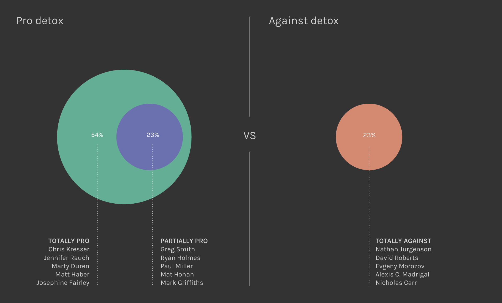

Introduction
The results achieved from the texts analysis highlights the position of the word “detox” in the scatterplot while the ones from Amazon show a huge quantity of self-help books. This is why we decided to analyse Google results for the query “Digital Detox”, where detox stands for the voluntary abstinence, for a certain amount of time from technologies, as an answer to their still presence and overload in everyday life.
After reading the results, we found three main ideologies around the topic: a group in favour of technology detox (whoever uses Internet should take some time off from it and dedicates more to real life rather than the virtual one), a group totally against detox (detox is useless because Internet is already deeply plugged into our lives) and a group which takes a half-way position between the first ones (Internet should be used only when strictly necessary: through detox is possible to keep away from technology due to a better and more balanced use of it, stress-free and more aware, without being dependent, see the image below).

Once read all the results found, we realised the main part of them were referred to digital detox travels or holidays. We then decided to proceed with a more detailed analysis about the packages offered by the technology-free vacations. We searched on Digital Detox Holidays portal, matching and integrating other results found on Tripadvisor.